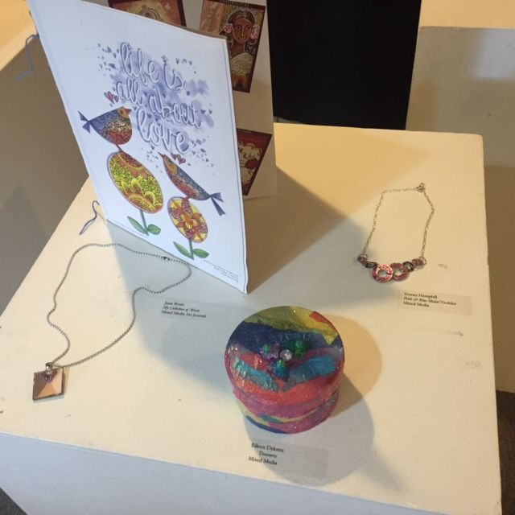
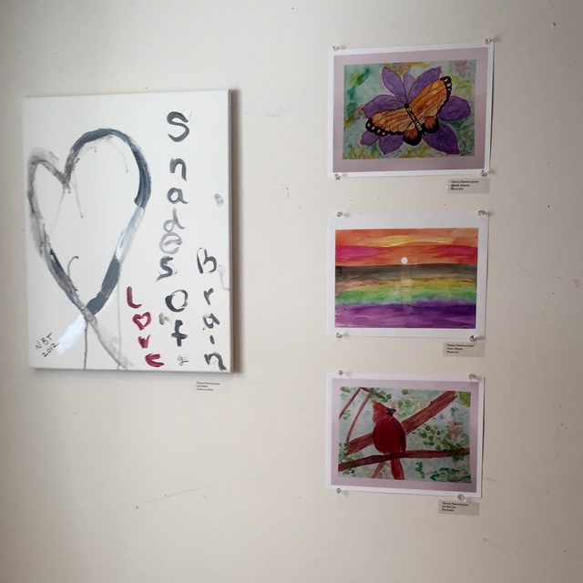

CSC 5 POINT MODEL
COUNSELING & STRESS MANAGEMENT
Stress and anxiety are correlated to overall wellness and healing. The Cancer Support Center provides comprehensive counseling and stress management programs that are delivered by high quality professionals. Counseling in private sessions or support group environments can help you and your loved ones cope with emotional responses, manage stress and find effective ways to communicate with family members and healthcare providers. Family, child and couples counseling are also offered.
Call to schedule a Personal Planning Session (PPS) with a counselor to create a program plan that is right for you.
 INDIVIDUAL & FAMILY THERAPY
ART & JOURNALING GROUPS
SURVIVOR & CAREGIVERS GROUPS
BEREAVEMENT GROUPS
FAMILY COUNSELING • KIDS CLUB
DISTRESS SCREENING • CONSULTATIONS
GUIDED IMAGERY • MEDITATION
View our program calendar to see upcoming events!
Education & networking
The Cancer Support Center has a resource library at each location to help you gain insight and information about cancer. The Center provides an array of networking opportunities for you, whether you are a patient or a caregiver. In meeting other people who are on a similar path, you are able to gain a sense of comfort and companionship.
When you are first diagnosed and receive treatment options, the amount of information can be overwhelming and difficult to comprehend. The Cancer Support Center provides an array of educational workshops and networking opportunities for you, whether you are a patient or a caregiver
LENDING LIBRARY • COUNSELING
SPECIFIC CANCER-RELATED GROUPS
INFORMATION • NETWORKING GROUPS
SUPPORT GROUPS • MONTHLY FAMILY ACTIVITIES